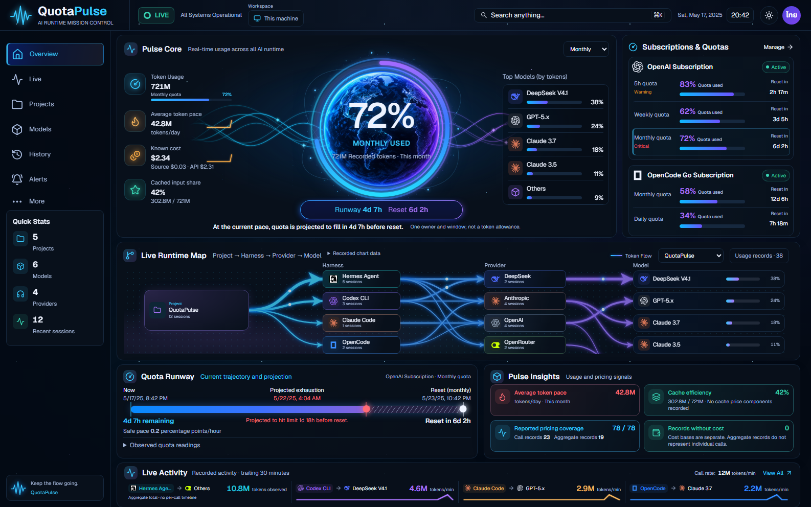

The v1.76 candidate adds token-weighted Runtime Map flows and measured pace/cache insights. Captures use an in-memory synthetic fixture and do not indicate 99–100% visual acceptance.

 Production app — synthetic review fixture
Production app — synthetic review fixture